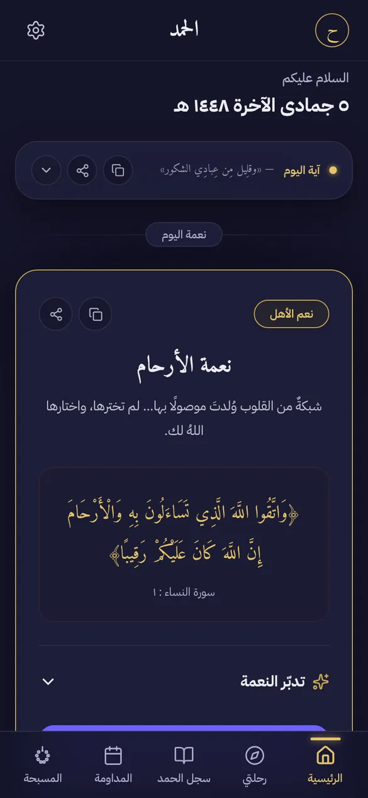
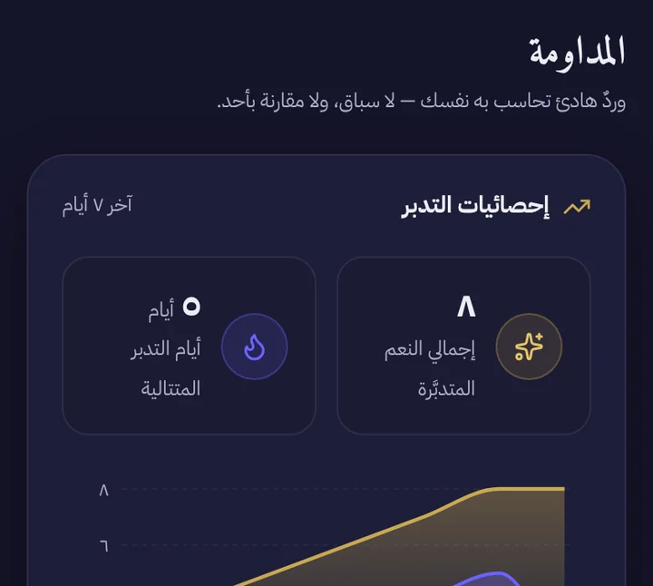
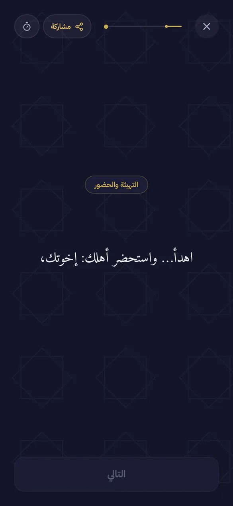
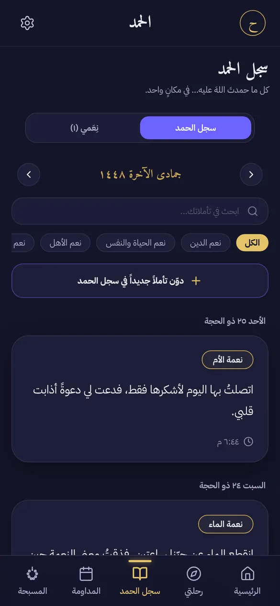
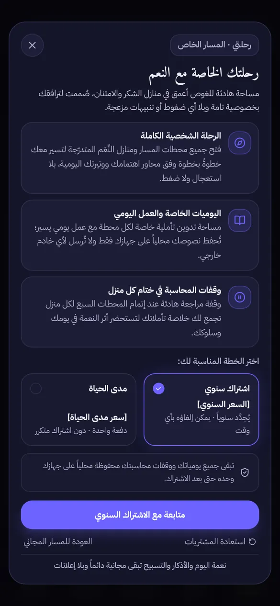
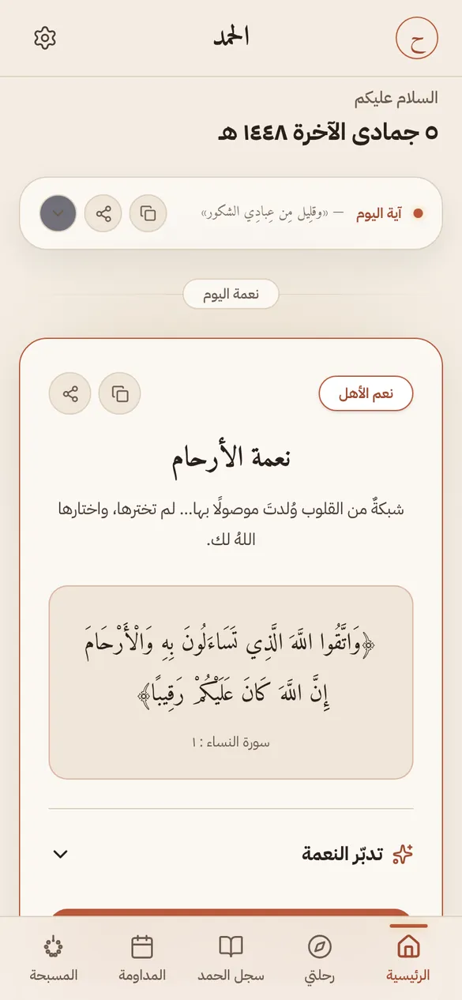
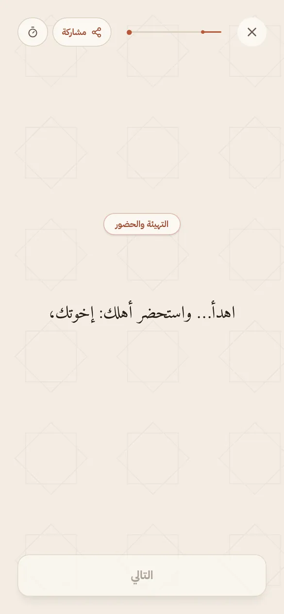

That is the whole of Alhamd (الحمد): one blessing a day, imagined gone, then given back. I designed it, built it in nine weeks, and made its users three promises: no streaks, nothing leaves your phone, no unverified sacred text. This is the story of those promises, including the day I checked my own app against them and it failed.

“Praise be to God” is said dozens of times a day and felt almost never. Apps in this space reward how often you say it, not whether you mean it.
You only feel a blessing’s worth when you picture losing it. One blessing, 80 seconds, will do more than a counter ever will.
Wrote the promises first, a 40-blessing script library, a night-and-day design system, and a paid path that never touches the daily ritual.
Built and running. A promise audit on 15 Nov found five places where the app breaks its own word. They are now launch gates.
[Your origin, two sentences: the moment you noticed you were saying alhamdulillah without feeling anything.]
Sight, water, a mother’s voice, the ability to stand up. The blessings that never leave are exactly the ones we stop seeing. The app says it in one line: فالنعمة إذا دامت صارت عادة، والعادة لا تُشكر. A blessing that lasts becomes a habit, and nobody thanks a habit.
Products built around gratitude and remembrance tend to take one of three shapes. Each fails the same person differently.
If a person spends 80 seconds picturing one day without one blessing, then gets it back, the thanks will be real. And real thanks brings people back without being chased.
People start reflections and quit during the two “absence” steps, or only come back when reminded. Both are countable without reading a word anyone writes. The plan is in chapter 09.
أعظمُ نعمةٍ أنعمَ اللهُ بها عليك: أن هداكَ للإسلام، ولو شاء لتركك في الظلمات.
Saying no is cheap until it has a price. Each refusal below is listed with what it gave up, the feature it forced into existence, and the result of checking it against the code on 15 Nov 2026. Two of the six did not hold.
The most proven retention mechanic in consumer apps.
A Hijri calendar where an empty day is just empty. Version 1’s nine streak milestones were deleted.
No accounts, no sync, no user list, almost no behavioural data.
Local storage only, a backup file you export yourself, and analytics that are opt-in with a five-key allow-list.
Content is slow, and launch waits for a scholar.
A review state on every verse, hadith grade and scholar quote, and a gate in the content loader.
Revenue from the most-used screen.
A paid guided path of 28 stations, two free, annual or lifetime. The paywall itself says the daily blessing stays free.
Network effects and free content.
Everyone gets the same blessing on the same day, picked by one line of date math. No server involved.
Re-engagement. An hourly haptic nudge was specced, then cancelled.
One optional daily reminder at a time you choose, and no guilt messages.
Version 1 shipped the standard kit: a consecutive-day counter with nine celebration milestones, from 3 days to 365. The promise was the opposite. Here are the two side by side.
Six days in a row. The number is the reward.
Six days you reflected. No number anywhere.
With a streak, one missed day turns six days of worship into zero. The guilt is about the number, and the easiest way to stop feeling it is to stop opening the app. The hadith on the onboarding screen argues the other way: the deeds God loves most are the most consistent, even if small.
That was the promise. Then I opened my own Consistency screen.
Writing this case study, I had every promise the product makes checked against the code, line by line. Five failed. The first one is the promise this whole product is built on.

ConsistencyScreen.tsxI had deleted the nine milestones and kept the promise in the copy. The counter itself came back on 20 October, inside a commit titled “implement dynamic theme system and font settings.” Nobody decided to break the promise. It was broken by a commit about something else, and nothing was watching. commit 5ebc2dc · 20 Oct
A promise in onboarding copy is a product requirement. It needs an owner and a test, the same as any other requirement, because the people most likely to break it are well-meaning and working on something else. All five findings are now launch gates in chapter 09. None of them ships.
Users forgive a bug. They don’t forgive a wrong vowel in a verse, or a weak hadith presented as sound. So sacred text is treated like regulated data: every field that can be wrong carries its own review state.
The gate is six lines and one boolean. Today the boolean is false, which is finding 2. The fix is not to flip it. Flipping it today would ship an empty app, because nothing is approved yet. The fix is a named scholar and 40 signatures, and then the flag.
export const CONTENT_REVIEW_GATE = false; export const getAllBlessings = () => { if (CONTENT_REVIEW_GATE) { return data.blessings.filter( b => b.reviewStatus === 'approved'); } return data.blessings; // all 40, pending };
[How you worked, two sentences: your tools, what you directed versus what you built, how changes were reviewed.]
Most reflection happens after Isha or before Fajr, one thumb on the phone. So night is the default, one sentence carries the whole screen, and every touch target is at least 44 points. These are captures from the running app.





“No streaks” lived in four pieces of text and zero tests. So a streak came back and the copy kept saying otherwise.
Now: every promise gets a check that fails the build when the code breaks it.
The review system was finished before any review had happened. With the flag off, it protects nothing, and my landing page claimed it did.
Now: marketing copy is checked against the data before it ships, like code.
Three pre-filled days made the calendar look alive on first open. In a product about sincerity, that is the one shortcut that isn’t available.
Now: an empty state is designed, not disguised.
The first six screens looked right, and some of their colours measured wrong. The design system corrected each one that failed and wrote the ratios down: the night grey passes 4.5:1, the day brown 5.6:1.
Now: contrast is measured on the real background before a colour gets a name.
Here is the uncomfortable part of promise 02. Because nothing leaves the device by default, I can’t show you a retention curve, and I won’t draw one I don’t have. What I can show is how success is defined, and how it gets measured without reading a single word a user writes.
If day-7 retention is low, I won’t bring the streak back. I’d test the reminder time and a shorter first reflection, and read the drop-off by step.
Today, everyone gets نعمة الماء. Next for Alhamd: close the five gates, a named scholar, the store. Next for me: [what you’re looking for, one line].
Every figure on this page was read from the product’s repository on 15 Nov 2026.
Dashed gold marks are the ones still waiting for real data.